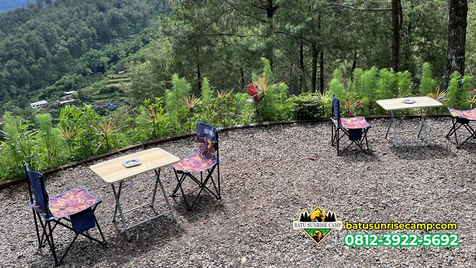

Banyak orang mengira keindahan batu ground camping hanya terletak pada momen mataharinya yang terbit dengan anggun. Namun, bagi saya pribadi, keajaiban yang sebenarnya seringkali muncul justru saat matahari sudah tenggelam. Mengapa? Karena saat itulah Kota Batu mulai "bernyanyi" lewat gemerlap ribuan lampu yang berkilau dari kejauhan.
Di Batu Sunrise Camp, kita berada di titik yang sangat strategis. Ketinggiannya memungkinkan kita melihat seluruh bentang lanskap Kota Batu dan Malang tanpa terhalang apapun. Melihat pemandangan city light ini rasanya seperti menatap kumpulan berlian yang sengaja ditaburkan di kaki gunung. Sangat romantis, tenang, dan bikin mager maksimal.
1. Pesona Gemerlap Malam: Lebih dari Sekadar Lampu
Ada sensasi yang berbeda saat kamu duduk di depan tenda di area batu ground camping dengan segelas kopi panas, sementara di depan matamu terbentang lautan cahaya. Kerlap-kerlip lampu itu seolah menceritakan kisah kehidupan di bawah sana yang masih sibuk, sementara kita di sini sedang menikmati kedamaian yang sunyi.
Udara dingin yang mulai menusuk justru membuat momen melihat city light jadi makin berkesan. Bau kayu pinus yang basah terkena embun dan suara serangga malam menjadi pengiring setia saat kita terpaku melihat indahnya Kota Batu di malam hari. Inilah alasan utama mengapa Batu Sunrise Camp tidak pernah sepi meskipun malam telah larut.
"Melihat city light adalah cara terbaik untuk menyadari bahwa setiap lampu mewakili satu cerita, dan malam ini, kamu sedang menulis ceritamu sendiri di atas sini."
— Affizar Ibrahim
2. Spot Foto City Light Terbaik
Bagi para pemburu konten visual, mendapatkan foto city light yang ciamik adalah sebuah keharusan. Di lokasi batu ground camping, tidak semua sudut memberikan sudut pandang yang sama bagusnya. Berikut beberapa bocoran spot favorit saya:
- Area Teras Depan Tenda: Jika tendamu dipasang menghadap ke timur laut, kamu bisa mendapatkan foto pintu tenda dengan latar belakang gemerlap kota.
- Sisi Pinggir Pembatas: Di sini pandanganmu benar-benar luas tanpa halangan pohon. Cocok untuk teknik foto panorama.
- Di Antara Pepohonan: Memberikan efek "frame" alami. Lampu kota akan terlihat mengintip dari sela-sela batang pinus yang gelap.
3. Tips Fotografi Malam Hari (Long Exposure)
Memotret city light di Batu Sunrise Camp tidak bisa asal jepret. Cahaya yang minim akan membuat foto menjadi buram (blur) jika kamu tidak tahu triknya. Ini beberapa tips singkat buat kamu:
- Wajib Gunakan Tripod: Karena kita butuh rana yang terbuka lama (long exposure), tripod adalah nyawa dalam fotografi malam. Jangan nekat pegang pakai tangan kalau nggak mau fotonya kayak lukisan abstrak.
- Atur ISO Rendah: Gunakan ISO 100 atau 200 supaya hasil foto tidak banyak bintik-bintik (noise).
- Kecepatan Rana Lambat: Atur shutter speed di kisaran 15-30 detik. Ini akan membuat lampu kota terlihat "tajam" dan warnanya lebih keluar.
- Gunakan Remote atau Timer: Getaran saat kita memencet tombol shutter bisa bikin foto goyang. Gunakan fitur timer 2 detik di HP atau kamera kamu.
4. Persiapan Alat dan Pakaian
Jangan sampai niatmu menikmati city light di area batu ground camping berantakan gara-gara kamu kedinginan atau kehabisan baterai. Berikut ceklis yang harus kamu perhatikan:
- Jaket Tebal & Kupluk: Jangan anggap remeh angin malam di Batu Sunrise Camp. Suhunya bisa turun drastis!
- Senter atau Headlamp: Membantu kamu saat mengatur alat foto atau sekadar jalan-jalan di sekitar area camping.
- Powerbank: Udara dingin bikin baterai HP atau kamera lebih cepat habis. Selalu sedia cadangan energi.
- Camilan & Minuman Hangat: Kopi, jahe hangat, atau susu coklat adalah teman terbaik saat terjaga di malam hari.
5. Suasana Tenang yang Dicari Banyak Orang
Mengapa banyak orang rela jauh-jauh ke lokasi batu ground camping cuma buat lihat lampu? Karena di sini kamu bisa mendapatkan ketenangan yang tidak ada di tengah kota. Suara kendaraan digantikan oleh hembusan angin. Sinar lampu neon digantikan oleh kerlip lampu kota yang lembut di kejauhan.
Menghabiskan waktu beberapa jam cuma buat bengong melihat pemandangan ini sebenarnya adalah salah satu bentuk meditasi. Pikiran yang tadinya penuh dengan beban kerjaan perlahan akan terasa lebih ringan. Itulah kekuatan *psychology of view* yang ditawarkan oleh Batu Sunrise Camp.
6. FAQ (Pertanyaan Umum)
Kapan waktu terbaik buat lihat city light?
Waktu paling bagus adalah setelah matahari benar-benar tenggelam sekitar jam 19.00 sampai subuh. Kalau hari cerah tanpa mendung, lampunya bakal terlihat tajam banget.
Apakah pemandangan city light ini ada setiap hari?
Iya, selama cuaca tidak berkabut tebal atau hujan deras, kamu pasti bisa melihat gemerlap Kota Batu setiap malam di seluruh area batu ground camping.
Fasilitas apa yang tersedia saat malam hari?
Tim Batu Sunrise Camp selalu siap siaga. Toilet dan penerangan area umum tetap aktif. Jadi kamu tetap merasa aman meskipun ingin menikmati pemandangan sampai dini hari.
7. Kesimpulan
Pengalaman menikmati city light di area batu ground camping Batu Sunrise Camp adalah paket lengkap. Kamu dapet visual yang memanjakan mata, dapet ketenangan batin, dan dapet kenangan yang nggak bakal terlupakan. Ini bukan cuma soal melihat lampu, tapi soal bagaimana kamu merayakan malam di pelukan alam.
Jadi, siapkan kamera kamu, ajak orang tersayang, dan biarkan gemerlap Kota Batu menjadi saksi bisu kebahagiaanmu malam ini. Sampai bertemu di bawah langit Batu!

Muhammad Affizar Ibrahim Alkautsar
Seorang penikmat malam yang selalu gagal tidur cepat karena terlalu jatuh cinta sama pemandangan city light.